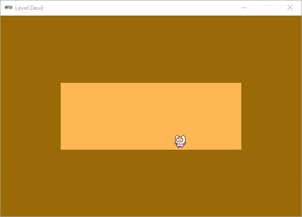

Player besturing#
In dit deel programmeren we de bewegingen van de speler. Met de pijltjestoetsen links, rechts en omhoog moet de speler horizontaal kunnen bewegen en springen. Daarbij moeten we ervoor zorgen dat de animaties van de speler overeenkomen met de bewegingen.
Commentaar#
Inmiddels telt ons codebestand al meer dan 50 regels code. Om te voorkomen dat we straks door de bomen het bos niet meer zien, en om de code beter leesbaar te maken voor anderen is het een goed idee de code van commentaar te voorzien.
1from pgzhelper import *
2
3# WINDOW SETTINGS
4WIDTH = 600
5HEIGHT = 400
6TITLE = 'Level Devil'
7
8# COLOR CONSTANTS
9COLOR_BACKGROUND = (153, 107, 7)
10COLOR_ROOM = (254, 184, 84)
11
12# ROOM AND TRAP VARIABLES
13room_rect = Rect((0, 0), (0, 0))
14trap_rects = []
15active_traps = set()
16
17# IMAGE LISTS FOR ANIMATED ACTORS
18player_img_idle = [f'player/idle/player_idle_{i:02d}' for i in range(11)]
19
20# PLAYER ACTOR
21player = Actor(player_img_idle[0], anchor = ('center', 'bottom'))
22player.images = player_img_idle
23player.fps = 20
24
25################################
26# SETUP_LEVEL()
27################################
28def setup_level(level):
29 if level == 1:
30 # ROOM SETUP
31 room_rect.width = int(3/5 * WIDTH)
32 room_rect.height = int(1/3 * HEIGHT)
33 room_rect.center = (WIDTH / 2, HEIGHT / 2)
34 # TRAPS SETUP
35 trap_rect = Rect((room_rect.left + 100, room_rect.bottom), (50, 0))
36 trap_rects.append(trap_rect)
37 trap_rect = Rect((room_rect.left + 200, room_rect.bottom), (50, 0))
38 trap_rects.append(trap_rect)
39 # PLAYER SETUP
40 player.pos = (room_rect.left + 20, room_rect.bottom)
41
42################################
43# EVENT HANDLERS
44################################
45def on_key_down(key):
46 if key == keys.K_0:
47 active_traps.add(0)
48 elif key == keys.K_1:
49 active_traps.add(1)
50
51################################
52# DRAW()
53################################
54def draw():
55 screen.fill(COLOR_BACKGROUND)
56 screen.draw.filled_rect(room_rect, COLOR_ROOM)
57 for trap_rect in trap_rects:
58 screen.draw.filled_rect(trap_rect, COLOR_ROOM)
59 player.draw()
60
61################################
62# UPDATE()
63################################
64def update():
65 # PLAYER
66 player.animate()
67 # TRAPS
68 for index, trap_rect in enumerate(trap_rects):
69 if index in active_traps:
70 if trap_rect.height < HEIGHT - room_rect.bottom:
71 trap_rect.height += 2
72
73################################
74# MAIN PROGRAM
75################################
76setup_level(1)
Kom je eigen code nog overeen met de hierboven getoonde code? Let daarbij ook op de regelnummers. Bij het toevoegen van nieuwe code kun je aan die regelnummers namelijk zien op welke positie in het bestand je de nieuwe code moet plaatsen.
Horizontale beweging#
Als de speler naar rechts loopt, moet het karakter ook naar rechts kijken. En als de speler naar links loopt, moet het karakter naar links kijken. Om dit te programmeren, maken we eerst twee constanten aan voor de richting van de speler:
8# COLOR CONSTANTS
9COLOR_BACKGROUND = (153, 107, 7)
10COLOR_ROOM = (254, 184, 84)
11
12# DIRECTION CONSTANTS
13LEFT = 1
14RIGHT = 2
15
16# ROOM AND TRAP VARIABLES
Voor de idle animatie hebben we al een lijst met sprites, maar voor de loopbeweging nog niet. Dat doen we nu:
21# IMAGE LISTS FOR ANIMATED ACTORS
22player_img_idle = [f'player/idle/player_idle_{i:02d}' for i in range(11)]
23player_img_run = [f'player/run/player_run_{i:02d}' for i in range(12)]
De idle animatie bestaat ui 11 frames, maar de run animatie uit 12 frames. Met de list comprehension in regel 23 vullen we de lijst player_img_run met de bestandsnamen 'player/run/player_run_00', 'player/run/player_run_01', …, 'player/run/player_run_11'.
Aan de player Actor voegen we enkele nieuwe eigenschappen toe voor de beweging:
25# PLAYER ACTOR
26player = Actor(player_img_idle[0], anchor = ('center', 'bottom'))
27player.images = player_img_idle
28player.fps = 20
29player.speedx = 5
30player.dx = 0
31player.direction = RIGHT
De player.dx eigenschap geeft aan hoe snel de speler beweegt in horizontale richting. In de wiskunde is dx (delta x) een notatie voor de verandering van de x-coördinaat. Op dit moment is player.dx ingesteld op 0, wat betekent dat de speler nog niet beweegt. Als de speler wél beweegt, moeten de sprites van de run animatie worden getoond in plaats van de sprites van de idle animatie. Tevens moet eventueel de waarde van player.direction worden aangepast. We gaan deze logica programmeren in een aparte functie met de naam update_player_state():
50################################
51# UPDATE_PLAYER_STATE()
52################################
53def update_player_state():
54 if player.dx < 0:
55 player.direction = LEFT
56 player.images = player_img_run
57 elif player.dx > 0:
58 player.direction = RIGHT
59 player.images = player_img_run
60 else:
61 player.images = player_img_idle
In de event handler functies on_key_down() en on_key_up() passen we de waarde van player.dx aan op basis van welke toets is ingedrukt of losgelaten. Verwijder de huidige code uit on_key_down() en voeg de volgende code toe:
63################################
64# EVENT HANDLERS
65################################
66def on_key_down(key):
67 if key == keys.RIGHT:
68 player.dx += player.speedx
69 elif key == keys.LEFT:
70 player.dx -= player.speedx
71 update_player_state()
72
73def on_key_up(key):
74 if key == keys.RIGHT:
75 player.dx -= player.speedx
76 elif key == keys.LEFT:
77 player.dx += player.speedx
78 update_player_state()
Door zowel de on_key_down() als de on_key_up() functie te programmeren, zorgen we ervoor dat de speler beweegt zolang één toets is ingedrukt en dat de speler stopt met bewegen wanneer beide toetsen zijn losgelaten óf ingedrukt. Immers, als de speler de rechterpijltoets indrukt, wordt player.dx verhoogd met player.speedx, maar als de speler vervolgens ook de linkerpijltoets indrukt, wordt player.dx weer verlaagd met player.speedx, waardoor de speler stopt met bewegen.
In beide gevallen wordt na het aanpassen van player.dx de functie update_player_state() aangeroepen om de animatie en richting van de speler bij te werken op basis van de nieuwe waarde van player.dx.
In de update() functie moeten we tenslotte nog de positie van de speler aanpassen op basis van de waarde van player.dx. Ook checken we hier welke kant de speler op moet kijken door de waarde van player.direction te gebruiken. Voeg de volgende code toe aan de update() functie:
90################################
91# UPDATE()
92################################
93def update():
94 # PLAYER
95 player.animate()
96 player.x += player.dx
97 player.flip_x = player.direction == LEFT
98 # TRAPS
99 for index, trap_rect in enumerate(trap_rects):
100 if index in active_traps:
101 if trap_rect.height < HEIGHT - room_rect.bottom:
102 trap_rect.height += 2
De player.flip_x eigenschap is afkomstig van de pgzhelper module en kan de waarden True of False aannemen. Regel 97 zorgt ervoor dat de sprite horizontaal gespiegeld wordt wanneer player.direction gelijk is aan LEFT. Op deze manier kijkt de speler altijd in de richting waarin hij beweegt. Probeer het maar eens uit!
Op dit moment kan de speler nog door de muren van de kamer lopen. Met een eenvoudig if statement kunnen we dit voorkomen:
90################################
91# UPDATE()
92################################
93def update():
94 # PLAYER
95 player.animate()
96 player.x += player.dx
97 player.flip_x = player.direction == LEFT
98 # keep player inside the room
99 if player.left < room_rect.left:
100 player.left = room_rect.left
101 elif player.right > room_rect.right:
102 player.right = room_rect.right
103 # TRAPS
104 for index, trap_rect in enumerate(trap_rects):
105 if index in active_traps:
106 if trap_rect.height < HEIGHT - room_rect.bottom:
107 trap_rect.height += 2

Springen#
Om de speler op een natuurlijk manier te laten springen, moeten we zwaartekracht simuleren. Voeg daartoe een constante GRAVITY toe aan de code:
12# DIRECTION CONSTANTS
13LEFT = 1
14RIGHT = 2
15
16# GRAVITY
17GRAVITY = 0.3
In de images/player/jump/ map staan de sprites voor de jump animatie. Het zijn er slechts twee: één voor de beweging omhoog en één voor omlaag. We vullen de lijst player_img_jump met deze sprites:
24# IMAGE LISTS FOR ANIMATED ACTORS
25player_img_idle = [f'player/idle/player_idle_{i:02d}' for i in range(11)]
26player_img_run = [f'player/run/player_run_{i:02d}' for i in range(12)]
27player_img_jump = ['player/jump/player_jump', 'player/jump/player_fall']
De player Actor moet worden uitgebreid met enkele eigenschappen voor de verticale beweging:
29# PLAYER ACTOR
30player = Actor(player_img_idle[0], anchor = ('center', 'bottom'))
31player.images = player_img_idle
32player.fps = 20
33player.speedx = 5
34player.speedy = 6
35player.dx = 0
36player.dy = 0
37player.direction = RIGHT
38player.in_air = False
De player.speedy eigenschap bevat de sprongsnelheid van de speler. De player.dy eigenschap geeft aan hoe snel de speler beweegt in verticale richting. De player.in_air eigenschap is een boolean die bijhoudt of de speler zich in de lucht bevindt of niet. Dat is belangrijk om bij te houden, teneinde te voorkomen dat de speler meerdere keren kan springen terwijl hij in de lucht is.
De speler moet springen wanneer op de toets pijltje omhoog wordt gedrukt. Voeg de volgende code toe aan de on_key_down() functie:
70################################
71# EVENT HANDLERS
72################################
73def on_key_down(key):
74 if key == keys.RIGHT:
75 player.dx += player.speedx
76 elif key == keys.LEFT:
77 player.dx -= player.speedx
78 elif key == keys.UP and not player.in_air:
79 player.dy = -player.speedy
80 player.in_air = True
81 update_player_state()
Wanneer de pijltje omhoog toets wordt ingedrukt en de speler zich niet in de lucht bevindt, wordt player.dy ingesteld op de negatieve waarde van player.speedy, waardoor de speler met de sprongsnelheid omhoog beweegt. Tevens wordt player.in_air ingesteld op True, zodat de speler niet nogmaals kan springen voordat hij weer op de grond staat.
In de update() functie moeten we tenslotte nog de verticale beweging van de speler programmeren. Voeg de volgende code toe aan de update() functie:
100################################
101# UPDATE()
102################################
103def update():
104 # PLAYER
105 player.animate()
106 player.x += player.dx
107 player.flip_x = player.direction == LEFT
108 if player.in_air:
109 player.y += player.dy
110 player.dy += GRAVITY
111 if player.dy < 0:
112 player.image = player_img_jump[0]
113 else:
114 player.image = player_img_jump[1]
115 if player.y > room_rect.bottom:
116 player.y = room_rect.bottom
117 player.dy = 0
118 player.in_air = False
119 # keep player inside the room
Regels 109 t/m 118 worden alleen uitgevoerd als de speler zich in de lucht bevindt. In regel 110 zie je dat de verticale snelheid van de speler toeneemt door de zwaartekracht. Op het moment van springen is de snelheid negatief (coderegel 79), maar door regel 110 wordt deze steeds minder negatief, totdat de speler het hoogste punt van de sprong heeft bereikt en weer naar beneden begint te vallen.
In de regels 111 t/m 114 wordt de sprite van de speler aangepast op basis van de verticale snelheid. Zolang de speler omhoog beweegt, wordt de eerste sprite van de jump animatie getoond. Zodra de speler begint te vallen, wordt de tweede sprite van de jump animatie getoond.
In regel 115 wordt gecontroleerd of de speler onder de grond is gezakt. Als dat het geval is, wordt de speler weer op de grond geplaatst en worden de verticale snelheid en de in_air status van de speler gereset, zodat de speler weer kan springen.
Op dit moment zijn de waarden van player.speedy en GRAVITY zodanig, dat de speler niet hoger dan het plafond van de kamer springt. Maar als je de waarde van player.speedy in regel 34 verhoogt naar bijvoorbeeld player.speedy = 10, dan zal de speler wél door het plafond van de kamer heen springen. Als je wilt, kun je in de update() functie een extra check toevoegen om dit te voorkomen. Dat is aan jou!